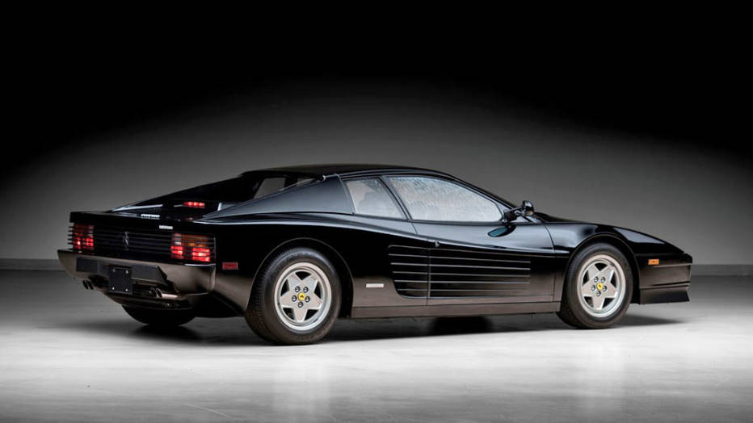
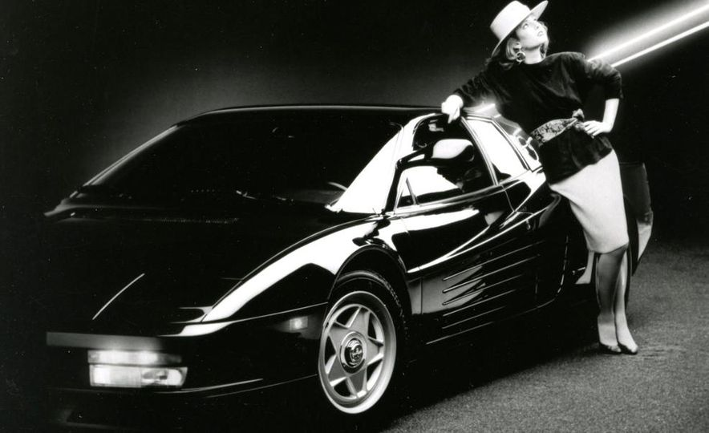

Like many sequels, the Testarossa of the 80's relied on the hype of the original but delivered little of the emotion.

| Model | Year | 0-60mph | Top Speed |
|---|---|---|---|
| Testarossa | 1984-91 | 5.2 sec | 180 |
The Testarossa is a two-door coupé that premiered at the 1984 Paris Auto Show. All versions of the Testarossa were available with a rear-mounted, five-speed manual transmission. The rear mid-engine, rear-wheel drive layout (engine between the axles but behind the cabin) keeps the centre of gravity in the middle of the car, which increases stability and improves the car's cornering ability, and thus results in a standing weight distribution of 40% front: 60% rear. The original Testarossa was re-engineered for 1992 model year and released as the 512 TR (TR meaning TestaRossa), at the Los Angeles Auto Show, effectively as a completely new car, and an improved weight distribution of 41% front: 59% rear. A new revision dubbed the F512 M was introduced at the 1994 Paris Auto Show. The car dropped the TR initials and added the M which in Italian stood for modificata, or translated to modified, and was the final version of the Testarossa,which continued its predecessor's weight distribution improvement of 42% front: 58% rear. The F512 M was Ferrari's last mid-engined 12-cylinder car, apart from the flagships F50, Enzo and LaFerrari, featuring the company's last flat-12 engine. The Testarossa was replaced in 1996 by the front-engined 550 Maranello coupé.
